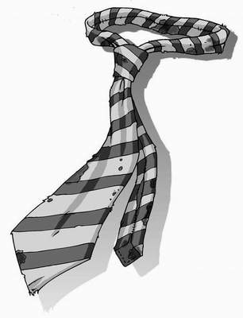

William Scroggins skipped happily along the corridor outside the science rooms, singing to himself. This was turning out to be the best day of his afterlife.
He was just eleven years old when the plague had taken his life, and they hadn’t been easy years. As soon as he’d been able to walk, he was put to work on his parents’ farm. No school for William Scroggins. Until now.
Today he’d sat in on year seven’s double maths lesson, even enjoying the extra ten minutes the boy called Alexander had added to the lesson. Year eight’s French class was just as much fun, and he’d sat next to the prettiest girl he had ever seen. Stacey, she was called. Having never been taught to read, he hadn’t been able to gather that from the cover of her exercise book, but another girl had called her that name while talking behind the teacher’s back. Stacey. Stacey, Stacey, Stacey!
Of course, he’d had to change his appearance to go unnoticed by the other pupils. Even though he was technically the right age to be in those classes, his grubby, ragged clothes and the dark purple circles round his eyes would have caused him to stand out like a branded ox at a cattle fair. It was a simple matter of becoming completely transparent, one of the many tricks he’d learnt from his friend Ambrose since becoming a ghost.
While invisible, he’d also crept into the headmaster’s office and watched as Mr Tick performed magic on a glowing box. ‘Flipping computer’ the box was called. At least, that’s what Mr Tick had shouted at it when everything had stopped moving on the front of the box, and he’d had to pull out the black rope which attached it to the wall.
It would be a shame to lose all of these exciting experiences when the school closed down. Edith was very determined to see that happen and, even after she’d explained the purpose of William’s visit to the surface, he hadn’t really understood what the school’s closure would mean. There was so much fun to be had up here.
So, William had decided not to tell Edith the truth. He wasn’t going to lie to her, of course. That would be wrong. No, he was just going to tell her a little of what he had seen, and keep the rest to himself. If Edith wanted to know what the pupils were scared of, he’d tell her: not much.
He still wasn’t sure what to do about the other problem, however: the three boys who had figured out the ghosts’ existence, and who were planning to send a rat down into the sewers dressed up to make it look as though it was carrying the plague. That information he would keep to himself.
Arriving at the ground-floor girls’ toilets, William glanced around to make sure he was alone, then turned himself invisible and slipped inside. There was no one about, so he dashed into cubicle four, slimmed his body down so that it looked like a string of spaghetti, and dived head first into the water.
He’d barely got past the U-bend when a long, thin arm appeared and its hand grabbed hold of his hair, dragging him through the pipes and into the sewers. It was Edith, of course. And Ambrose was with her.
‘So?’ she demanded as soon as he had reformed into the shape of a boy. ‘What’s
happening up there?’ Her voice echoed noisily throughout the network of brick tunnels.
William shrugged. ‘Not much, really,’ he said. ‘A lot of the children have small stones tied to bits of string which they push into their ears to listen to someone called “empey three” and some of them wear shoes that I think are made from mice because they’re white and they squeak when they walk along the corridors…’ He paused to fix an image firmly in his mind. ‘Oh, and there’s one girl who’s prettier than a lamb in springtime. She’s called Stacey.’
Ambrose smiled at the soppy expression on William’s face, but when Edith grabbed the boy’s shoulders and shook him hard, he quickly turned it into a look of seriousness, in case she did the same to him.
‘Never mind all that,’ shouted Edith. ‘How can we defeat them? What are their weaknesses?’
William thought hard. ‘Erm, they don’t like doing homework much.’
Edith pulled a face that either meant she was about to explode with rage, or that she badly needed the toilet. ‘I meant, what are they afraid of?’
This was the moment William was dreading. He knew that Ambrose’s appearance as the purple tentacle, and throwing the rotten, grey hand they’d borrowed from Bertram Ruttle’s collection of body parts, had been the scariest thing these children had ever seen, but if he told Edith as much she’d have them haunting the classrooms from morning till night.
He glanced up at Ambrose for help, to discover that his friend had puffed out his cheeks and rolled his eyes back in his head. For a moment, William thought he might have gone mad but, when Ambrose raised his hands and clenched them into fists, he suddenly understood.
‘The Gorilla!’ he blurted. ‘They’re scared of the child they call “The Gorilla”. He’s a bully, and inflicts pain upon the smaller children if they don’t do exactly what he says.’
Slowly, ever so slowly, a smile began to creep across Edith’s face. Before long, she was cackling insanely and dancing around, her dirty skirt clutched in her bony fingers.
William looked back at Ambrose, who was watching Edith’s dance with a horrified look on his face. Edith being happy could only mean one thing: she had a plan.
